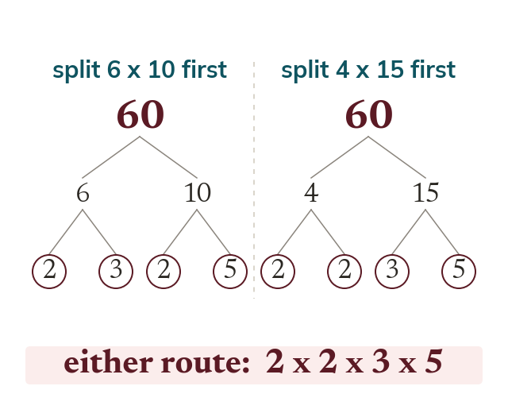

Prime factor decomposition
Every number above is prime or a product of primes. A factor tree splits it until every branch ends in a prime. Any starting pair gives the same primes.
Every whole number above is either prime itself, or can be written as a product of primes in exactly one way (ignoring the order you write them in). A factor tree finds this by splitting a number into a pair of factors, then splitting each factor again, and again, until every branch ends in a prime - it doesn't matter which pair you split first, the same set of primes comes out at the end.